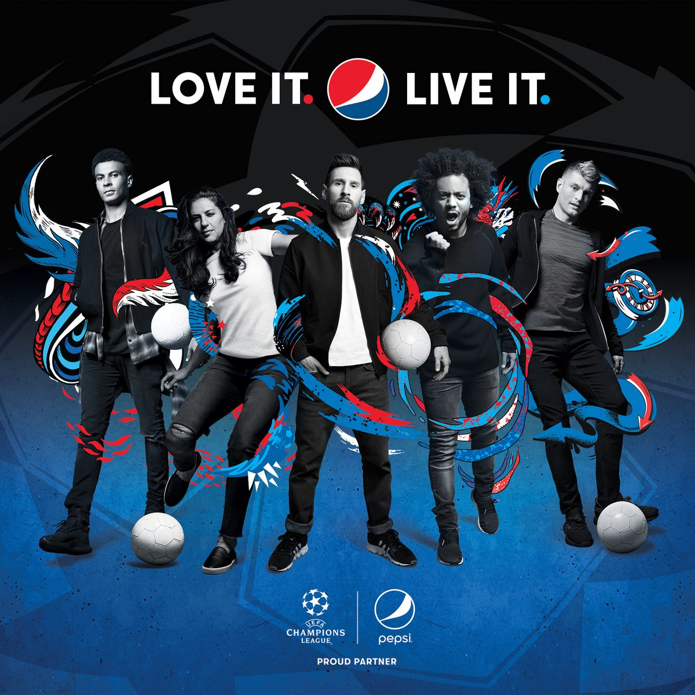
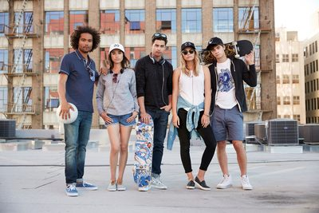
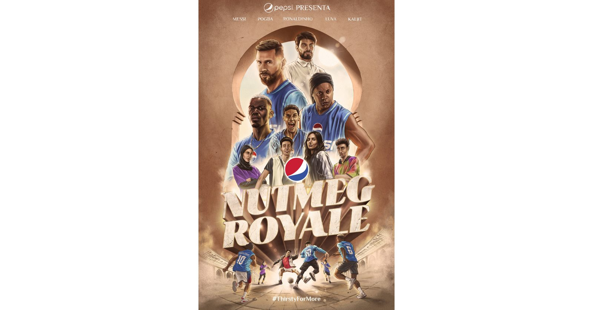

案例发生了什么




百事没有把跨届足球营销做成不断更换球星的广告合集，而是持续经营一套“球星也会玩”的娱乐语法：2014 年让梅西等球星进入里约街头音乐片，2018 年用彩色足球、艺术家视觉和限量包装把球场扩展到城市，2022 年把穿裆技巧拍成《Nutmeg Royale》动作电影，2026 年再升级为讨论球迷规则与日常仪式的 Football Nation。
2014 年以全球广告片、互动影片、音乐和 Art of Football 时尚胶囊打通内容与零售；2018 年用统一艺术视觉连接球星大片、60 多个市场投放、户外与限量包装；2022 年用《Nutmeg Royale》主片及线下穿裆桌上足球延伸技巧主题；2026 年用 Football Nation 影片、Reddit 讨论和浏览器扩展把品牌从“观看球星”推进到“共同定义足球文化”。
营销启发卡
把历届经典的记忆点、商业结构和迁移方法放在同一层阅读。 卡片底部按主题连接全站相关案例、经典方法与深度文章。
梅西、小罗等顶级球星没有被拍成严肃英雄
追星、炫技、音乐、街头派对，以及球迷在九十分钟之外仍会持续进行的争论和仪式；梅西、小罗等顶级球星没有被拍成严肃英雄，而是在街头、音乐和游戏规则里成为一群会玩、可接近的文化角色。
Pepsi 的核心资产不是某一届赛事标识
Pepsi 的核心资产不是某一届赛事标识，而是年轻文化中的娱乐身份。球星负责吸引注意，音乐、艺术、街头场景与球迷语言负责把足球翻译成更接近饮料消费的轻松、社交和分享时刻；2014 年以全球广告片、互动影片、音乐和 Art of Football 时尚胶囊打通内容与零售；2018 年用统一艺术视觉连接球星大片、60 多个市场投放、户外与限量包装；2022 年用《Nutmeg Royale》主片及线下穿裆桌上足球延伸技巧主题；2026 年用 Football Nation 影片、Reddit 讨论和浏览器扩展把品牌从“观看球星”推进到“共同定义足球文化”。
当品牌不拥有世界杯核心赛事权益时
当品牌不拥有世界杯核心赛事权益时，可以长期占据“足球之外的足球文化”：用稳定的娱乐母题统领每届新球星、新平台和新商品，而不是每四年从零开始做一支大广告。
适用条件、风险与证据
- 球星矩阵和电影级内容成本高，且容易只留下“阵容豪华”的印象；每个周期都必须设计可被用户参与、可进入渠道或商品的具体机制，并明确区分 UEFA 权益、球星合作与世界杯非官方借势。
- 官方新闻稿可以验证阵容、媒介、市场范围和执行形态，但没有提供统一的销售增量或品牌提升口径；本页不把世界杯自然热度、影片播放量或 UEFA 权益直接归因成 Pepsi 的世界杯赞助效果。
官方资料与原始来源
全球
非世界杯官方赞助 / 全球球星、音乐与足球文化资源
长期内容平台型；球星娱乐化型；音乐艺术跨界型；商品零售延展型
- PepsiCo · 2014-04-02NOW IS WHAT YOU MAKE IT：球星、音乐与里约街头的全球影片
- PepsiCo · 2014-05-21Live for Now 足球艺术胶囊系列进入全球零售
- PepsiCo · 2018-03-06LOVE IT. LIVE IT. FOOTBALL 全球整合战役
- PepsiCo / PR Newswire · 2022-10-13Nutmeg Royale 全球足球影片
- PepsiCo · 2026-04-20Pepsi Football Nation：由球迷定义足球规则
来源按品牌/官方发布、官方账号留存、权威媒体、获奖案例库分层记录；品牌与奖项自报结果不视作独立审计。